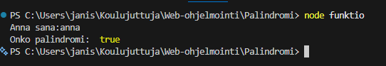
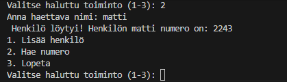
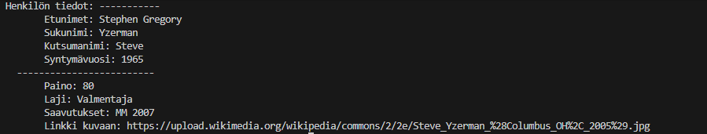
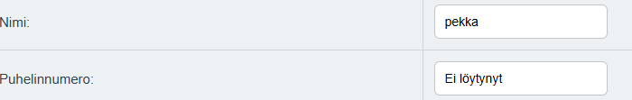
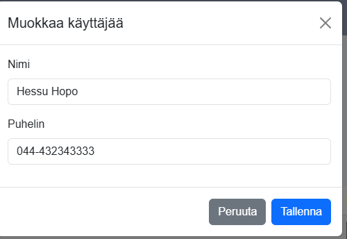

Olen Jani Silander, tietojenkäsittelyn tradenomiopiskelija ja tämä
on minun web-ohjelmointikurssin portfolio. Tällä kursilla olen
saanut hyvät perusteet web-ohjemointiin liittyen.
Minulla ei ollut aikaisempaa kokemusta web-ohjelmoinnista.
Jani Silander 2026
Tehtävä 1
Linkki koodiin. Tämän tehtävän ratkaisemiseksi käytin hyödyksi
ensimmäisen vuoden ohjelmointikursilla tehtyä vastaavaa
tehtävää sillä C# ja JavaScript ovat melko samankaltaisia
kieliä. Haastetta aiheutti se, että minulla ei ollut
aikaisempaa kokemusta JavaScriptistä. For-loop oli helppo
toteuttaa, koska se on hyvin samanlainen kuin C#:ssa.
Tehtävä oli mielenkiintoinen ja antoi hyvän kuvan
JavaScriptin toiminnasta. Opin myös, miten kutsua ohjelmaa
Visual Coden terminaalista, mikä oli minulle uutta.
Mielestäni tehtävä onnistui hyvin ja tässä tehtävässä en
tekisi mitään toisin.

Tehtävä 2
Linkki koodiin. Ohjelmani toimii siten, että käyttäjä voi syöttää
henkilön nimen sekä numeron ja ne pysyvät ohjelman muistissa
sen käynnissä olo ajan. Ohjelma sisältää funktion, joka
hakee puhelin numeron nimen perusteella ja hyväksyy myös
pienet kirjaimet (toLowerCase). Ohjelma toimii
while-loopissa, joka sisältää ohjelman toiminnallisuuden
(lisäys, haku, lopetus). Ohjelman kirjoittamisessa hyödynsin
tunneilla käytyjä esimerkkejä sekä verkosta löytää
materiaalia (esim. w3Schools). Valitsin tämän toteutustavan,
koska tässä käyttäjä itse syöttää tiedot joten haun
testaaminen on helpompaa (ei tarvitse arvailla tai etsiä
koodista ohjelman sisältämiä nimiä). Opin kirjoittamaan
funktiota JavaScriptillä, käyttämään readlinea syötteiden
lukemiseen sekä käyttämään pushia. Kaikkia näitä täytyy
vielä harjoitella lisää, koska joudun vielä hakemaan paljon
tietoa JavaScriptin toiminnasta. Tehtävä onnistui mielestäni
kokonaisuutena hyvin, enkä tekisi mitään toisin tässä
tehtävässä.

Tehtävä 3
Linkki koodiin. Tein ensimmäisenä henkilö- ja urheilija-luokat lisäsin
niihin ominaisuudet käyttämällä constructor-metodia sekä
super-metodia yhdistämään näiden luokkien tiedot. Tein myös
funktion joka kutsuu henkilö-luokan tietoja, jotta ohjelma
kutsuu kun ohjelma käynnistetään. Tein tämän ratkaisun,
koska se helpottaa huomattavasti tietojen tulostusta
ohjelmaa käyttäessä. Kirjoitin kaksi urheilija oliota,
joille haetaan tiedot get-metodilla ja toisen urheilijan
tietoja muokataan vielä set-metodilla tulostuksen
yhteydessä. Tulostuksen yhteydessä hyödynnetään metodia,
jonka avulla urheilija perii henkilö-luokan sisältämät
ominaisuudet. Opin tehtävän aikana luomaan JavaScriptillä
luokkia sekä niiden välisten perinnöllisyyksien toiminnan.
Opin get- ja se-metodien käyttämistä sekä verkkolinkin
lisäämisen koodiin, vaikkakin tämän tehtävän asiat vaativat
lisää harjoittelua. Tämän tehtävän tekemiseen jouduin
käyttämään enemmän aikaa, kuin aikaisemmissa tehtävissä,
koska perinnöllisyyden toiminnan sisäistäminen vei aikaa.
Mielestäni tehtävä onnistui hyvin, vaikkakin tässä tuo
GitHubin jakaminen tuotti ongelmia. Tein omasta ensin
yksityisen, mutta tehtävää ei ole vielä arvioitu niin olisi
todennäköisesti pitänyt tehdä siitä heti julkinen.

Tehtävä 4
Linkki koodiin. Tässä tehtävässä käytin pohjana 1. tehtävää, jonka avulla
tein tähän visuaalisen pohjan. Tein haku sivulle kentät
joista toiseen syötetään haetun henkilön nimi ja toisessa
näytetään löydetty numero (tai ei löytynyt teksti).
Koodissani on toiminnallisuus, joka hakee serveriltä
JSON-muotoisen datan, käy sen läpi ja etsii sieltä syötettyä
nimeä sekä toiminto joka hakee kaikki tiedot taulukkoon ja
näyttää ne sivulla. Tässä hyödynsin 2.tehtävässä tehtyä
koodia, jossa piti tehdä samantyylinen hakutoiminto. Tämän
tehtävän suorittaminen onnistui suht helposti tunnilla
käytyjen esimerkkien sekä verkosta löytyvän materiaalin
perusteella. Vaikka sain tehtävän tehtyä mielestäni hyvin,
niin vielä on paljon opittavaa. Mielestäni sain tehtyä
toimivan ratkaisun tähän tehtävään, mutta 5.tehtävän jälkeen
huomasin, että style.css:n voisi kirjoittaa vähemmillä
riveillä yhtenäisen näköiseksi (linkki muokattuun versioon
löytyy tekstin alusta).

Tehtävä 5
Linkki koodiin. Tämän tehtävän ratkaisussa hyödynsin Moodlesta löytyvää
valmista pohjaa. Ensimmäiseksi lisäsin valmiiseen koodiin
muokkaa napin sivulle sekä testasin uuden numeron luomisen
sekä poistamisen. Sen jälkeen tein sivujen välille
navigointi mahdollisuuden, jotta sitä olisi mukavampi
käyttää. Lisäsin lomake-sivulle modal pop-up ikkunan, koska
se on mielestäni selkein tapa toteuttaa tässä ratkaisussa
tietojen muokkaus. Pop-up ikkunan jälkeen tein script3:sen,
johon kirjoitin muokkauksen toiminnallisuuden. Se sisältää
funktion joka hakee käyttäjän tiedot serveriltä ID:n
perusteella (fetch) ja näyttää käyttäjän nimen ja numeron
pop-up ikkunan kentissä. Sieltä löytyy myös funktio joka
tallentaa muokatun numeron käyttäjätietoihin käyttämällä
PUT-metodia. Funktio muokkaa tiedot lopuksi JSON-muotoon,
jotta se voidaan tallentaa serverille. Lisäsin myös numeron
muokkaamiseen syötteen tarkistuksen kirjaimien ja muiden
virheellisten syötteiden varalta. Lopuksi tein vielä
style.css:n, joka sisältää sivujen ulkoasun. Tämän tehtävän
tekemiseen hyödynsin verkosta löytyvää materiaalia (etenkin
bootstrap ja MDN Web Docs), jotta sain pop-up ikkunan
toimimaan. PUT-metodin tekemiseen hyödynsin koodista
löytyvää POST-metodia. Tämäkin tulee vaatimaan lisää
harjoittelua, jotta eri toiminnot ja komennot jäisivät
paremmin mieleen. Tämä tehtävä onnistui mielestäni erittäin
hyvin, enkä keksi mitään mitä voisin tehdä toisin.

Palaute osio
Käytin tähän portfolion Moodlesta löytyvää valmista mallia,
koska se oli selkeän näköinen, mutta poistin siitä itselle
turhia osia sekä muokkasin sitä hieman. Mielestäni olen
oppinut hyvät perusteet web-ohjelmoinnista tältä kurssilta,
mutta minulla ei ollutkaan aikaisempaa kokemusta tästä
aiheesta, joten kehitys on ollut huomattavaa. Ajankäyttöni
on vastannut kurssin opintopisteiden määrää (tunnit mukaan
lukien olen käyttänyt kurssiin n.125 tuntia). Oppitunnit
tukivat oppimista paljon. Tunneilla läpikäydyt esimerkit
olivat selkeitä ja niiden avulla pääsi hyvin alkuun
kurssitehtävien tekemisessä. Myöskin tunneilla käytetyt
lähteet olivat hyödyllisiä sisältönsä puolesta. Kurssin
aikana minun ei tarvinnut pyytää apua, koska sain ratkaistua
ongelmat tuntien nauhoituksista sekä verkosta. Mielestäni
kurssin kohokohtana on ollut oma oppimiseni, sain tehtyä
kaikki tehtävät sekä opin paljon uusia asioita. Olisin
tietysti toivonut aktiivisempaa osallistumista muilta
opiskelijoilta. Olen ajatellut jatkaa kesällä aiheen
opiskelua Helsingin yliopiston Full-Stack-kurssia. Ja
mielestäni web-ohjelmointi voisi olla myös mahdollinen ura
tulevaisuudessa, koska aihe on mielenkiintoinen.